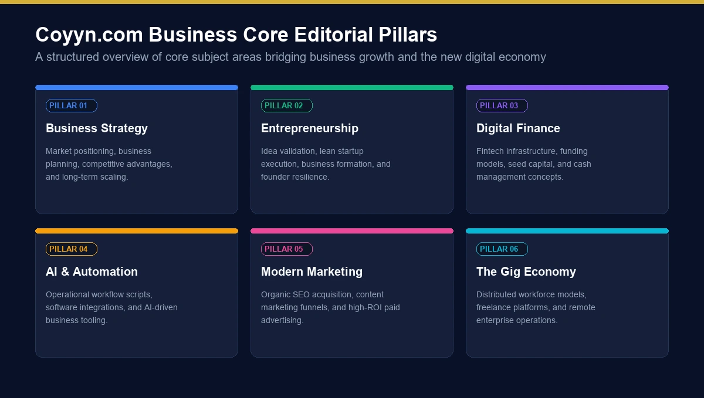
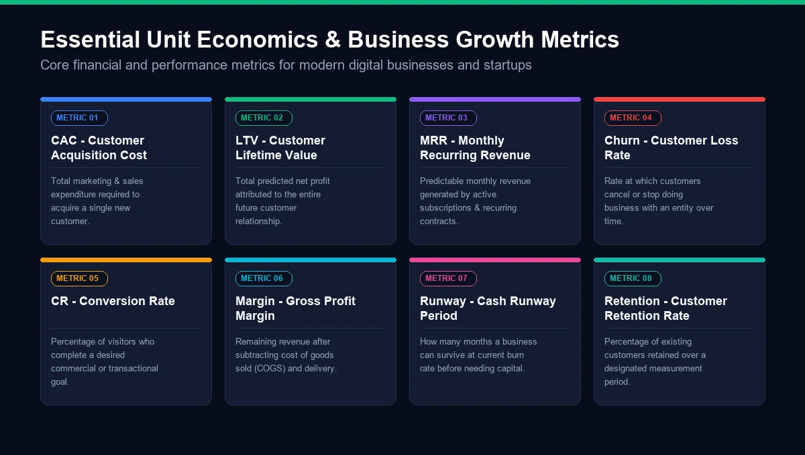
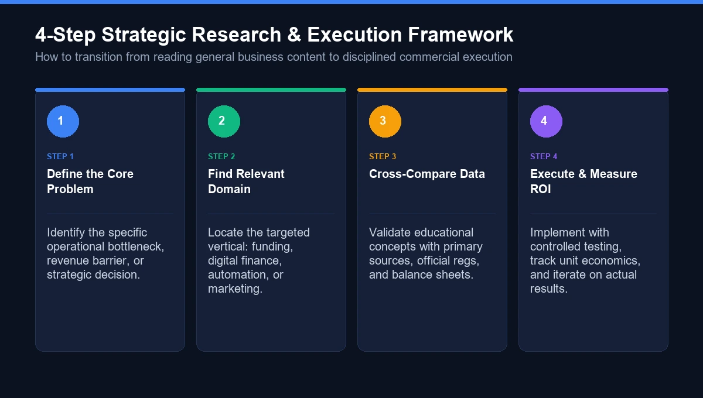

1. What Is Coyyn.com Business? 2. Coyyn.com Business and the New Economy 3. What Does Coyyn.com Business Cover? 4. 1. Starting a Business 5. 2. Business Planning 6. 3. Business Funding 7. Coyyn.com Business and Digital Finance 8. Coyyn.com Business and Artificial Intelligence 9. How Automation Can Change Business Operations 10. Coyyn.com Business and Marketing 11. Organic Marketing 12. Paid Marketing 13. Important Business Metrics to Understand 14. Coyyn.com Business for Startups 15. Coyyn.com Business for Small Businesses 16. Coyyn.com Business and the Gig Economy 17. Is Coyyn.com Business a Financial Platform? 18. Coyyn.com Business vs. a Traditional Business Platform 19. What Makes Coyyn.com Business Useful? 20. How to Use Coyyn.com Business as a Research Resource 21. Key Benefits of Understanding the Coyyn.com Business Ecosystem 22. Common Mistakes When Researching Coyyn.com Business 23. Mistake 1: Assuming Coyyn Is a Bank 24. Mistake 2: Assuming Every Third-Party Description Is Accurate 25. Mistake 3: Treating Educational Content as Financial Advice 26. Mistake 4: Confusing Information With Implementation 27. Frequently Asked Questions About Coyyn.com Business 28. What is Coyyn.com Business? 29. Is Coyyn.com Business a fintech platform? 30. What topics does Coyyn.com Business cover? 31. Does Coyyn.com provide business funding? 32. Is Coyyn.com an investment platform? 33. Does Coyyn.com cover cryptocurrency? 34. Does Coyyn.com cover the gig economy? 35. Who can benefit from Coyyn.com Business? 36. Can I use Coyyn.com Business for financial decisions? 37. Why is Coyyn.com Business different from a business software platform? 38. Final Thoughts on Coyyn.com Business Coyyn.com Business is the business and growth-focused section of Coyyn.com.
The site's business category contains articles covering modern business strategy, operations, entrepreneurship, technology, automation, finance, and emerging trends. Current examples include content about automation and robotics, advertising performance prediction, CFO strategy, brand positioning, ESG, and strategic partnerships.
Rather than presenting business as a single subject, Coyyn approaches it through the broader idea of the new economy.
That means looking at how businesses are affected by:
Digital infrastructure
Artificial intelligence
Automation
Remote and distributed work
Digital finance
Changing customer behavior
New funding models
Data-driven decision-making
Online marketing
The gig economy
Emerging technology
This broader perspective is what makes the phrase Coyyn.com Business relevant to both new entrepreneurs and established business owners.
Coyyn.com Business in Simple Terms
Think of it as a digital business-information resource.
It can help readers understand:
Topic
What readers can learn
Business Strategy
Planning, positioning, growth and competitive decisions
Entrepreneurship
Starting, validating and developing a business
Finance
Digital finance, funding and financial concepts
Marketing
SEO, content, advertising and customer acquisition
Operations
Processes, systems, automation and efficiency
Technology
AI, software, robotics and digital infrastructure
Gig Economy
Freelancing, independent work and platform-based income
Growth
Scaling, partnerships, metrics and sustainable expansion
The important word here is information.
Coyyn.com does not present its Business section as a replacement for an accountant, attorney, financial adviser, lender, or investment professional. Its role is to provide educational and editorial material that helps readers understand these subjects.
The concept of the new economy sits at the center of Coyyn's business coverage.
Traditional businesses often depended heavily on physical locations, local employees, physical infrastructure, and conventional financial institutions.
Modern businesses can operate very differently.
A small company can now:
Sell products internationally.
Hire remote specialists.
Use cloud software instead of maintaining physical servers.
Accept digital payments.
Automate repetitive workflows.
Reach customers through search engines and social media.
Analyze customer behavior using data.
Build an audience before launching a product.
Use freelancers for specialized projects.
Coyyn's own Business guide identifies digital-first operations, distributed talent, data as an asset, access-over-ownership models, and faster business iteration as characteristics of the new economy.
This is important because starting a business today does not necessarily require the same resources that were required twenty or thirty years ago.
At the same time, easier access to technology has also increased competition.
The barrier to launching a business may be lower, but attracting attention and retaining customers can be harder.

Figure 2: Coyyn.com Business core editorial architecture bridging strategy, entrepreneurship, digital finance, and modern automation.
The Coyyn.com Business section covers several connected areas rather than one narrow business topic.
1. Starting a Business
Starting a company is more than registering a name and launching a website. Developing the right mindset, focus, and productivity routines is equally vital, as detailed in our practical Success100x.com leadership insights .
The first challenge is determining whether there is a real problem worth solving.
A practical starting process includes:
Identify a specific customer problem.
Talk with potential customers.
Research existing alternatives.
Create a simple solution or MVP.
Test whether people are willing to pay.
Collect feedback.
Improve the business model.
This process can save entrepreneurs from making a common mistake: spending months building a product before confirming that customers actually want it.
Why Business Validation Matters
A good idea on paper does not automatically become a good business.
Customer validation provides evidence.
For example, instead of asking:
“Do you like this idea?”
A founder can ask:
“How are you solving this problem today?”
and:
“What does that solution cost you?”
Those questions produce much more useful information.
2. Business Planning
A business plan does not have to be a massive document.
For many early-stage companies, a concise plan can be more useful because it is easier to update.
A practical business plan can include:
Customer problem
Target market
Product or service
Unique value proposition
Revenue model
Pricing
Marketing channels
Operating requirements
Key performance indicators
Initial financial assumptions
Growth milestones
The important thing is not the length of the document.
It is whether the plan helps the founder make better decisions.
3. Business Funding
Funding is another major part of business growth.
Different businesses require different amounts and types of capital.
Common funding approaches include:
Bootstrapping
The founder uses personal savings and business revenue to finance operations.
Potential advantages:
Greater ownership control
No outside equity investor
Flexible decision-making
Potential limitations:
Slower growth
Limited resources
Greater financial pressure on the founder
Angel Investment
Angel investors are individuals who invest their own money into businesses, often at an early stage.
Some also provide industry knowledge, mentorship, or connections.
Venture Capital
Venture capital generally targets companies with significant growth potential.
VC funding can provide substantial capital, but founders typically exchange equity and may have additional expectations around growth and reporting.
Crowdfunding
Crowdfunding allows businesses to raise money from a larger number of individuals through specialized platforms.
Depending on the model, contributors may receive products, rewards, or equity.
Business Loans
Traditional and government-backed lending programs can also provide capital, depending on eligibility, business history, creditworthiness, collateral, and local regulations.
Coyyn's Business guide discusses these funding paths as part of the modern business environment.
Digital finance has changed how individuals and companies manage money.
Instead of depending entirely on physical bank branches and traditional financial processes, businesses now use:
Online banking
Digital payment systems
Accounting software
Financial dashboards
Cloud-based invoicing
Digital wallets
Payment gateways
Automated financial workflows
Data analytics
Coyyn covers digital finance as one of its broader editorial areas alongside business, cryptocurrency, banking, and the gig economy.
However, readers should distinguish discussing digital finance from providing financial services.
Coyyn's current Business guide specifically describes the site as an informational and editorial resource rather than a provider of funding or investment services.
That distinction is particularly important when evaluating third-party articles about Coyyn.com.
Artificial intelligence is becoming increasingly relevant to business operations.
Companies are using AI for tasks such as:
Customer support
Data analysis
Content creation
Marketing research
Forecasting
Workflow automation
Document processing
Lead qualification
Personalization
Internal knowledge management
But AI should not automatically be treated as a replacement for human decision-making.
A better business approach is often:
Automate repetitive work → review the output → use human judgment for important decisions.
For example, an AI system might summarize hundreds of customer messages in minutes. A manager can then use those summaries to identify recurring complaints and decide what action the company should take.
That combination of technology and human judgment can be more practical than either approach alone.
How Automation Can Change Business Operations
Automation is another important part of the new economy. Organizations looking to understand how modern cloud architecture and intelligent workflows drive scalable transformation can explore our Droven.io Enterprise Tech Innovation overview .
Businesses can automate repetitive processes such as:
Invoicing
Scheduling
Email notifications
Data entry
Reporting
Inventory alerts
Customer-service routing
Marketing workflows
The goal is not simply to automate everything.
The goal is to reduce unnecessary manual work.
Automation Example
Imagine a small online business receiving 100 customer inquiries each week.
Instead of manually sorting every message:
Customer inquiry → automated categorization → correct team → response template → human review
can reduce repetitive work while keeping people involved where judgment is necessary.
Coyyn's Business guide also highlights automation and AI as increasingly important components of modern business operations.
A good product still needs customers.
That makes marketing an essential part of business growth.
Modern companies can combine several channels.
Organic Marketing
Organic channels include:
SEO
Content marketing
Social media
Email marketing
Community building
Referral marketing
Word-of-mouth
These channels can take time to develop but may create long-term visibility.
Paid Marketing
Paid acquisition can include:
Google Ads
Social advertising
Retargeting
Sponsored content
Creator partnerships
Display advertising
Paid campaigns can generate traffic quickly, but spending alone does not guarantee profitable growth.
The real question is:
How much does it cost to acquire a customer, and how much value does that customer generate?

Figure 3: Essential unit economics and growth metrics evaluating CAC, LTV, MRR, churn rate, and cash runway.
Important Business Metrics to Understand
One of the easiest ways for a growing company to become distracted is by tracking too many numbers.
A smaller set of meaningful metrics is often easier to manage.
Metric
Meaning
CAC
Customer Acquisition Cost
LTV
Customer Lifetime Value
MRR
Monthly Recurring Revenue
Churn
Percentage of customers lost
Conversion Rate
Percentage of users who complete a desired action
Gross Margin
Revenue remaining after direct costs
Cash Runway
How long available cash can support operations
Retention
How effectively a business keeps customers
Customer Acquisition Cost
CAC measures the average cost of acquiring a customer.
For example:
If a company spends $5,000 on marketing and sales and gains 100 customers:
CAC = $50
Customer Lifetime Value
LTV estimates how much revenue a customer generates during the relationship.
The relationship between CAC and LTV can help businesses evaluate whether customer acquisition is economically sustainable.
Cash Runway
A profitable business can still experience financial problems if cash arrives later than expenses are due.
That is why cash-flow management matters.
Startups often operate under uncertainty. Studying how visionary founders navigate technical disruption and organizational scale provides crucial lessons, such as those found in our detailed Mike Krieger and Toshihiro Suzuki leadership analysis .
They may not yet know:
Which customer segment will grow fastest.
Which pricing model works.
Which marketing channel performs best.
How much customers are willing to pay.
Which features actually matter.
How quickly the company can scale.
A startup therefore needs a learning process.
A Practical Startup Framework
Problem → Customer → MVP → Feedback → Product Improvement → Revenue → Repeatable Acquisition → Scale
Skipping the early validation steps can create expensive problems later.
The goal of an MVP is not to create a perfect product.
It is to learn whether the fundamental business assumption is correct.
Small businesses face a different set of challenges from venture-backed startups.
They often care more about:
Predictable cash flow
Customer retention
Local visibility
Operational efficiency
Staff productivity
Repeat purchases
Profit margins
Digital tools can help small businesses compete without requiring a huge technology department.
For example, a local service company might use:
Google Business Profile
Online scheduling
CRM software
Email automation
Online payments
Accounting software
Local SEO
The objective is not to use every available tool.
It is to use the tools that solve actual business problems.
The gig economy is another major part of Coyyn's broader subject ecosystem.
Freelancers, contractors, creators, consultants, delivery workers, and independent professionals can now build income streams outside conventional employment.
For businesses, this creates access to specialized skills without necessarily hiring every specialist as a full-time employee.
For workers, it can provide flexibility and access to international clients.
But there are also considerations around:
Income stability
Contracts
Taxes
Worker classification
Benefits
Intellectual property
Payment terms
The exact legal and tax requirements vary by country and jurisdiction, so professional advice may be appropriate for specific situations.
Coyyn's overall site explicitly identifies the gig economy, freelancing, platform work, and independent income as one of its major content pillars.
This is one area where online descriptions can become confusing.
Coyyn.com Business should not automatically be described as a banking, investment, payment, or financial-services platform.
Coyyn's own Business guide says the website is an informational and editorial resource and states that it does not provide funding, investment services, or personalized financial or legal advice.
Some third-party pages describe Coyyn.com using terms such as blockchain, smart contracts, digital wallets, and DeFi. However, those descriptions do not match the current positioning on Coyyn's own website.
For that reason, readers should rely on Coyyn's official site when determining what the company actually offers.
This is also an important SEO/entity distinction: a website can publish information about a technology without itself providing that technology as a service.
Area
Coyyn.com Business
Traditional Business Software
Primary purpose
Information and education
Business operations
Articles
Yes
Usually limited
Business strategy content
Yes
Usually not the main purpose
Financial education
Yes
Depends on product
Payment processing
Not presented as a core service
May be available
Business dashboard
Not presented as the site's primary function
Common
Accounting
Educational content may discuss it
Some platforms provide it
Funding information
Yes
Depends on platform
Personalized financial advice
Not presented as a service
Depends on provider
The distinction is simple: Coyyn.com is primarily a publishing and information resource, while business software is generally designed to execute operational tasks.
The biggest value of a business information resource is not that it provides one magic solution.
It is that it helps readers connect different areas of business.
For example:
Marketing + Finance + Technology + Operations + Customer Behavior
are no longer completely separate disciplines.
A marketing decision affects customer acquisition cost.
Technology affects operating costs.
Customer retention affects lifetime value.
Automation affects employee productivity.
Financial decisions affect the company's ability to scale.
Modern business requires understanding how these pieces interact.

Figure 4: A structured 4-step framework for turning general business information into disciplined commercial execution.
If you are using Coyyn.com to learn about business, a structured approach works better than reading random articles.
Step 1: Define the Problem
Start with a specific question.
For example:
“How can I reduce customer acquisition costs?”
Step 2: Find the Relevant Topic
Look for material covering marketing, customer acquisition, analytics, or business growth.
Step 3: Compare Information
Don't make a major financial or legal decision based on one article.
Compare information with:
Official government resources
Company documentation
Industry publications
Academic research
Professional advisers
Step 4: Apply the Information
Turn the information into a small experiment.
For example:
Test one marketing channel.
Measure conversion.
Calculate CAC.
Compare customer quality.
Decide whether to scale.
This turns passive reading into practical learning.
Readers exploring Coyyn.com Business may find value in understanding several connected areas:
Business Growth
Learn how companies can acquire customers, improve operations, and develop sustainable growth systems.
Digital Finance
Understand how technology is changing banking, payments, financial management, and access to capital.
Entrepreneurship
Explore business validation, planning, funding, and scaling.
Technology
Understand how AI, automation, cloud systems, and digital infrastructure influence business operations.
Gig Economy
Learn how freelancing, independent work, and distributed talent are changing the labor market.
Strategic Thinking
Connect individual business decisions with larger economic and technological trends.
There are several misconceptions worth avoiding.
Mistake 1: Assuming Coyyn Is a Bank
Coyyn's current website positions itself as an information and editorial resource rather than a conventional bank.
Mistake 2: Assuming Every Third-Party Description Is Accurate
Some external pages describe Coyyn as a fintech transaction platform with features such as digital wallets and smart contracts. Those claims should be checked against the official Coyyn website before being accepted as fact.
Mistake 3: Treating Educational Content as Financial Advice
Business and financial articles can provide useful background information, but individual financial decisions may require advice from qualified professionals.
Knowing how a business strategy works does not mean it will automatically work for every company.
Market, industry, competition, timing, pricing, and execution all matter.
Coyyn.com Business is the business-focused content area of Coyyn.com. It covers business growth, entrepreneurship, operations, digital finance, technology, automation, and the changing new economy. Coyyn describes its business content as part of an informational and editorial resource.
Coyyn's current official Business guide describes Coyyn.com as an informational and editorial resource rather than a financial-services or funding platform.
Topics include business strategy, entrepreneurship, business growth, funding, digital finance, automation, artificial intelligence, marketing, operations, technology, and the gig economy.
Coyyn's own Business guide states that the website does not provide business funding or investment services.
The official Coyyn positioning does not describe the website as an investment platform. It is presented primarily as an informational and editorial resource.
Yes. Cryptocurrency is one of Coyyn's major content areas, alongside business, digital money, banking, and the gig economy.
Yes. Coyyn identifies the gig economy, freelancing, platform work, and independent income as one of its main content pillars.
Entrepreneurs, startup founders, small-business owners, freelancers, marketers, technology professionals, and readers interested in the modern economy can use the content as a general educational resource.
You can use its articles for general education and research, but important financial, tax, legal, or investment decisions should be checked against authoritative sources and, where appropriate, qualified professionals.
A software platform generally provides tools that users operate directly, such as accounting, CRM, payments, or project management. Coyyn.com primarily publishes information and educational content about business, finance, technology, and the new economy.
Coyyn.com Business is best understood as a business-information and editorial resource within the broader Coyyn.com ecosystem.
Its coverage connects business growth, entrepreneurship, digital finance, technology, artificial intelligence, automation, marketing, operations, cryptocurrency, and the gig economy. Coyyn's own website currently organizes these subjects into broader content pillars designed to help readers understand the changing digital economy.
One of the most important points for anyone researching Coyyn.com Business is to separate the site's actual role from descriptions found on third-party websites. Current official information describes Coyyn as an informational resource, not a bank, investment service, payment processor, or business funding provider.
For entrepreneurs and business owners, the real value of this type of resource is the opportunity to connect ideas that increasingly overlap in the modern economy: technology affects operations, finance affects growth, marketing affects acquisition, and customer behavior affects nearly every business decision.
Use Coyyn.com Business as a starting point for understanding those relationships, then verify important financial, legal, tax, and operational decisions with appropriate primary sources and qualified professionals.
In a business environment that changes quickly, staying informed is not about following every new trend. It is about understanding which changes actually matter to your customers, your operations, and your long-term business model.